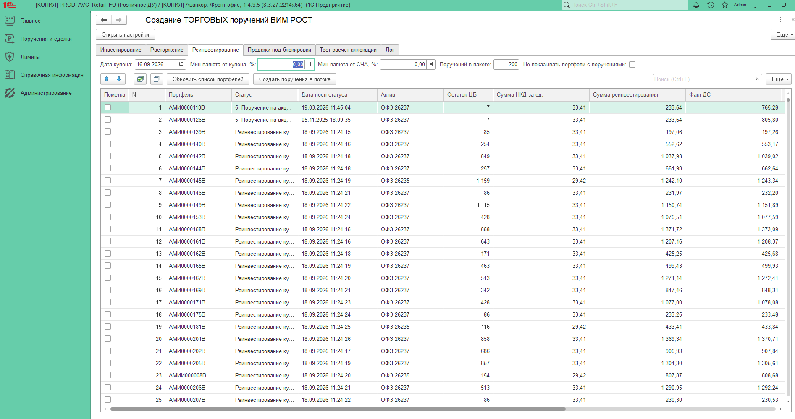

IMDEV-9531-TCR-1.24 | ISO/IEC/IEEE 29119-3 | 23.10.2026
Парный прогон на стенде Т-1 против эталона 1.16. Реинвестирование и продажи под блокировки. Регресс состава поручений пройден, время обеих операций меньше, чем у эталона.
23.10.2026 на стенде Т-1 версии 1.16 и 1.24 отработали один и тот же день, одни и те же списки портфелей. Сравнение проведенных поручений: реинвестирование 199 из 199, продажи под блокировки 500 из 500. Количество, сумма и проведение совпали. Лишних и пропавших поручений нет.
Суммы проведенных поручений совпали до копейки: реинвестирование 1 075 331,38, продажи под блокировки 2 512 929,17. Все 10 потоков каждой операции дошли до финиша. Ошибок потоков, кроме известного отказа контроля по одному портфелю реинвестирования, нет.
Версия 1.24 собрана от 1.23. Обычный путь записи и проведения не менялся. Две правки по прогону 1.23 на Т-1: повтор проведения только при реальной конкуренции блокировок и такой же отказ в тестовом режиме, как в боевой установке цены. Поручение с отказом помечается на удаление и не попадает в сравнение и в отправку.
Эталон 1.16 и версия 1.24 прогонялись с разрывом около часа на одной и той же копии и одних и тех же списках. Состав поручений от времени прогона не зависит. Время сервера Т-1 в разные часы может отличаться, поэтому разницу в сотые доли секунды на одно поручение выводом не считать.
Время операции взято из замера обработки: от старта потоков до конца проверки лимитов. Длительность потока - из строки финиша журнала, это время самого потока, без ожидания соседних и без проверки пачки. Суммарные секунды шагов - сумма по всем вызовам всех потоков, это не часы на стене. Журнал пачек и замер сходятся в пределах 0,4 секунды.
Сравнивались проведенные поручения двух фиксаций. Поручение, которое контроль не провел, в оба набора не вошло: в 1.16 оно не создалось, в 1.24 помечено на удаление. Поэтому в сравнении 199, а не 200.
| Операция | В обоих | Совпали | Расхождения | Только 1.16 | Только 1.24 | Сумма, оба прогона | Проведение |
|---|---|---|---|---|---|---|---|
| Реинвестирование | 199 | 199 | 0 | 0 | 0 | 1 075 331,38 | 199 из 199 |
| Продажи под блокировки | 500 | 500 | 0 | 0 | 0 | 2 512 929,17 | 500 из 500 |
| Вместе | 699 | 699 | 0 | 0 | 0 | 3 588 260,55 | 699 из 699 |
| Прогон | Операция | Стартов | Финишей | Создано по потокам | Итог формы |
|---|---|---|---|---|---|
| 1.16 | Реинвестирование | 10 | 10 | 9 потоков по 20, поток 7 - 19 | Выполнено |
| 1.24 | Реинвестирование | 10 | 10 | 9 потоков по 20, поток 7 - 19 | Выполнено |
| 1.16 | Блокировки | 10 | 10 | 10 потоков по 50 | Выполнено |
| 1.24 | Блокировки | 10 | 10 | 10 потоков по 50 | Выполнено |
Строк "не хватает денежных средств" в обоих журналах: 0. Удалений из-за нехватки денег у 1.16 нет. У 1.24 одно реинвестиционное поручение помечено на удаление - это отказ проведения, разобранный в следующем разделе.
Контроль конфигурации не проводит одно поручение реинвестирования. В обоих прогонах это поток 7: на десятке портфелей создано 8, на финише потока создано 19 из 20. Сумма остальных 199 поручений совпала. Повторов проведения в журнале 1.24 нет: нет пауз 1+2+3+4 секунды и нет серии одинаковых отказов.
[err] Ошибка создания поручения:
{ВнешняяОбработка.СозданиеТорговыхПорученийРОСТ.МодульОбъекта(2377)}:
Ошибка при вызове метода контекста (Записать):
Не удалось провести: "Поручение"!
Поручение не создано. В сравнении его нет. Пометки удаления нет.
[err] Ошибка установки цены:
{ВнешняяОбработка.СозданиеТорговыхПорученийРОСТ.МодульОбъекта(3694)}:
Ошибка при вызове метода контекста (Записать):
Не удалось провести "Поручение 00000212611 от 23.10.2026 8:54:36"!
[err] Ошибка при попытки получить цену актива
Поручение 00000212611 помечено на удаление и в сравнение не попало. Вторая строка - сопутствующее сообщение того же отказа, не повтор проведения.
Ожидаемое поведение 1.24 на этом отказе выполнено: одна фиксация ошибки, без повторов, без лишнего проведенного поручения. Код портфеля журнал в текст ошибки не пишет. Номер поручения и номер потока совпадают с тем местом списка, где 1.16 тоже остановилась на 19 поручениях.
Общий масштаб всех полос ниже - 365,4 секунды, полное время эталона на двух операциях. Короткая полоса реинвестирования - это не ошибка масштаба: блокировки занимают большую часть стендового времени.
| Операция | 1.16, с | 1.24, с | Разница | Во сколько раз | На одно поручение 1.16 | На одно поручение 1.24 |
|---|---|---|---|---|---|---|
| Реинвестирование | 90,1 | 75,3 | -14,8 с, -16,4% | 1,20 | 0,453 с | 0,378 с |
| Продажи под блокировки | 275,3 | 146,7 | -128,6 с, -46,7% | 1,88 | 0,551 с | 0,293 с |
| Обе операции | 365,4 | 222,0 | -143,4 с, -39,2% | 1,65 | 0,523 с | 0,318 с |
Синяя доля полосы - создание поручений в потоках, включая разведение десяти потоков. Оранжевая доля - проверка лимитов и отправка пачки. Цифры долей взяты из замера: проверка лимитов отдельно, создание - остаток общего времени.
Выигрыш блокировок делится почти поровну. Создание короче на 60,7 с за счет кеша цены. Проверка лимитов короче на 67,9 с, потому что 1.24 отправила пачку один раз, а 1.16 - два. Состав 500 поручений при этом совпал. У реинвестирования проверка чуть дольше: 36,8 с против 33,2 с. Создание короче на 18,4 с, общий итог все равно быстрее.
Ширина полосы: 50 секунд = вся шкала. Верхняя полоса пары - 1.16, нижняя - 1.24. Это время потока, не часы всей операции.
1.16: 41,8 / 41,5 / 42,0 / 41,6 / 41,9 / 41,9 / 40,4 / 41,8 / 41,1 / 41,3 с. Среднее 41,5 с. 1.24: 25,8 / 24,9 / 24,8 / 25,7 / 25,2 / 25,2 / 26,2 / 25,5 / 23,8 / 25,1 с. Среднее 25,2 с, в 1,65 раза короче. Поток 7 в обоих прогонах создал 19 поручений.
Ширина полосы: 130 секунд = вся шкала. Разброс внутри версии меньше 4 секунд: потоки идут ровно, длинного хвоста нет.
1.16: 110,5 / 110,0 / 109,7 / 108,1 / 109,0 / 109,3 / 108,5 / 109,3 / 107,9 / 107,4 с. Среднее 109,1 с. 1.24: 60,0 / 60,5 / 60,4 / 60,5 / 60,4 / 59,1 / 60,3 / 59,5 / 59,5 / 59,0 с. Среднее 59,9 с, в 1,82 раза короче.
В тестовом режиме каждый запрос цены ждет 1 секунду. Кеш на 60 секунд оставляет один запрос на бумагу в потоке, остальные поручения берут цену из кеша. Среднее время одного запроса стакана не изменилось: около 1,03 с и там, и там. Сократилось число запросов.
Шкала запросов: 500 = вся ширина. Реинвестирование: минус 180 запросов, на 90,5% меньше. Блокировки: минус 490 запросов, на 98% меньше. Вместе 699 запросов против 29, на 95,9% меньше.
181 цена из кеша, 19 запросов стакана. Вместе 200 обращений к цене: 199 проведенных поручений и одно, которое затем удалено.
490 цен из кеша, 10 запросов стакана. 10 потоков, в каждом свой первый запрос. У 1.16 кеша нет: 0 из 500.
Это не длительность операции. Десять потоков копят секунды параллельно. График показывает, какой шаг перестал ждать паузу стакана. Шкала - 512 секунд, сумма шага "цена из стакана" у блокировок 1.16.
| Шаг | 1.16 реинвест | 1.24 реинвест | 1.16 блокировки | 1.24 блокировки |
|---|---|---|---|---|
| Статус портфеля | 0,234 (199) | 0,245 (199) | 0,247 (500) | 0,251 (500) |
| Запись поручения | 0,440 (199) | 0,497 (200) | 0,525 (500) | 0,531 (500) |
| Проведение с ценой | 0,353 (199) | 0,377 (200) | 0,374 (500) | 0,384 (500) |
| Проведение суммы | 0,375 (19) | 0,406 (19) | 0,422 (10) | 0,423 (10) |
| Цена из стакана | 1,023 (199) | 1,029 (19) | 1,024 (500) | 1,026 (10) |
| Цена из кеша | нет | 0,003 (181) | нет | 0,003 (490) |
Запись и проведение на одно поручение остались того же порядка: разница среднего 0,02-0,06 с. Одно поручение, помеченное потом на удаление, такую разницу дать не может: чтобы сдвинуть среднее записи на 0,057 с, его запись должна была бы идти около 11 с. Разница - колебание нагрузки сервера Т-1 между прогонами с разрывом в час, код записи и проведения в 1.24 не менялся. Пауза тестовой цены, когда запрос все-таки идет в стакан, не изменилась.
| ID | Проверка | Ожидание | Факт | Статус |
|---|---|---|---|---|
| TC-01 | Состав реинвестирования | Совпадает с 1.16 | 199 из 199, расхождений 0 | Пройден |
| TC-02 | Состав блокировок | Совпадает с 1.16 | 500 из 500, расхождений 0 | Пройден |
| TC-03 | Суммы | Равны до копейки | 1 075 331,38 и 2 512 929,17 в обоих прогонах | Пройден |
| TC-04 | Проведение | Все поручения сравнения проведены | 199 и 500 проведены в каждой версии | Пройден |
| TC-05 | Потоки | 10 стартов и 10 финишей, итог формы выполнен | Так по обеим операциям и обеим версиям, ошибок потоков сверх известного отказа нет | Пройден |
| TC-06 | Кеш 60 с | Запросов цены меньше числа поручений | 19 из 200 и 10 из 500, остальные из кеша | Пройден |
| TC-07 | Отказ проведения | Одна ошибка, без повторов, поручение не в сравнении | Поток 7, поручение 00000212611, пометка удаления, в сравнении 199 без лишних | Пройден |
| TC-08 | Нехватка денег | Нет массового удаления "не хватает ДС" | 0 строк в обоих журналах | Пройден |
| TC-09 | Время реинвестирования | Не хуже 1.16 | 75,3 с против 90,1 с | Пройден |
| TC-10 | Время блокировок | Не хуже 1.16 | 146,7 с против 275,3 с | Пройден |
| TC-11 | Отправка пачки | Одна проверка и отправка пачки на операцию | 1.24: по одной пачке (199 и 500). 1.16: блокировки дважды (450, затем 500) - ошибка формы 1.16, исправлена с 1.20 | Пройден |
Эти проверки на Т-1 не повторялись: они требуют искусственного сбоя (блокировка регистра на время прогона) или действия пользователя во время запуска. Сборки - тестовые, данные - выборка T9531PROP.
| ID | Проверка | Версия, дата | Факт | Статус |
|---|---|---|---|---|
| D-01 | Повтор проведения при конфликте блокировок | 1.24, 23.10.2026 | Регистр "Прогноз по поручению" заблокирован на 30 с во время продаж под блокировки 500: 10 повторов "Конфликт блокировок", проведение со 2-й попытки, все 500 поручений проведены | Пройден |
| D-02 | Ошибка по портфелю не обрывает поток | 1.23, 22.10.2026 | Регистр статусов портфелей заблокирован на 25 с: у 10 портфелей запись статуса упала, портфели пропущены, все потоки дошли до конца, итог "Завершено с ошибками, см. лог", 500 поручений | Пройден |
| D-03 | Запрет закрытия формы во время запуска | 1.23, 22.10.2026 | Вопрос "Идет запуск... Закрыть форму?" задан; после ответа "Нет" форма осталась открытой, запуск завершился | Пройден |
| D-04 | Один запуск с формы на всю базу | 1.21, 21.10.2026 | Во втором сеансе кнопки запуска недоступны, пока идет запуск в первом | Пройден |
| D-05 | Срок кеша 0 работает как 1.16 | 1.19, 19.10.2026 | Поручения 320 из 320 совпали с 1.16, число запросов стакана то же | Пройден |
Снимок тонкого клиента на стенде Т-1: обработка "Создание торговых поручений РОСТ", закладка "Реинвестирование". В отборе дата купона 16.09.2026, в пакете 200 поручений. На экране список портфелей до запуска потоков: статусы и даты статуса относятся к предыдущим дням, это исходный список, а не результат создания.

Отдельного снимка сообщения о завершении и снимка сравнения в этом комплекте нет. Завершение подтверждено журналом: 20 строк "Выполнено", 10 финишей на операцию, пачки 199 и 500 поручений. Сравнение подтверждено файлом фиксации двух прогонов от 23.10.2026.
| ID | Наблюдение | Влияние на приемку | Статус |
|---|---|---|---|
| З-01 | В фиксации прогона с меткой "1.24" атрибут версии карточки дополнительной обработки записан как "1.16", без суффикса "-т1". Причина - порядок действий: после прогона в карточку вернули исходную 1.16, а затем нажали "Зафиксировать прогон"; версия берется из карточки в момент фиксации. Прогон шел на 1.24: в логе строка "Кеш цены стакана: 60 с", в замерах есть шаг "Цена из кеша", отказ записан как "Ошибка установки цены", поручение помечено на удаление. У эталона 1.16 версии карточки "1.16-т1", шага кеша нет, отказ записан как "Ошибка создания поручения". | На состав поручений и время не влияет. В следующих прогонах фиксировать до смены сборки в карточке. | Причина известна |
| З-02 | Проверка лимитов реинвестирования у 1.24 на 3,6 с дольше: 36,8 с против 33,2 с. Создание при этом короче на 18,4 с, операция в целом быстрее. | Критерий "не хуже эталона" выполнен по полному времени операции. | К сведению |
| З-03 | 1.16 проверила лимиты блокировок дважды (450, затем 500 поручений, 63,8 с и 70,3 с). 1.24 - один раз (500 поручений, 66,4 с). Для 1.16 повторное сообщение о завершении на этом стенде ожидаемо. | Около половины выигрыша по блокировкам - одна проверка вместо двух. Вторая половина - кеш. Состав поручений совпал. | Учтено в разборе |
| З-04 | Пауза 1 с вместо боевого стакана одинакова в обеих сборках. На продуктивном адаптере абсолютные секунды будут другими, соотношение числа запросов (199 к 19 и 500 к 10) от паузы не зависит. | Вывод о регрессе состава поручений на это не опирается. Вывод о числе запросов переносится на продуктив. Вывод о секундах - качественный: меньше ожиданий стакана. | Граница стенда |
| З-05 | Боевой запрос цены в стакане (установка цены не в тестовом режиме) не выполнялся ни на Т-1, ни на базе разработки: на обоих стендах работал тестовый режим. Код запроса стакана в 1.24 тот же, что в 1.16; изменения вокруг него (проверка кеша перед запросом, запись цены в кеш, проведение с повтором, отметка цены в таблице "Цены в работе") сверены с 1.16 построчно. Функции кеша общие с тестовым режимом и проверены этим прогоном. | Остаточный риск. Снимается при первом запуске на продуктиве: в логе должны появиться строки "[inf] Цена из кеша запуска...", таблица "Цены в работе" - заполниться ценами бумаг запуска. | Проверить на продуктиве |
Версия 1.24 на стенде Т-1 прошла парный регресс против 1.16. 11 из 11 проверок этого прогона пройдены, проверки на сбоях и действия пользователя закрыты на базе разработки (D-01 - D-05). 699 проведенных поручений совпали, суммы совпали до копейки, лишних поручений нет. Отказ контроля по одному портфелю обработан без повторов и без проведенного хвоста.
Полное время двух операций 222,0 с против 365,4 с у эталона: меньше на 143,4 с, в 1,65 раза. Реинвестирование 75,3 с против 90,1 с. Продажи под блокировки 146,7 с против 275,3 с. Запросов цены 29 против 699.
Версию 1.24 можно передавать на установку со сроком кеша 60 секунд. Порядок установки на продуктиве:
До прогона на Т-1 сборки 1.16-т1 и 1.24-т1 сравнивались на базе разработки. Это другой контур: другие суммы, другое время, в графики Т-1 эти цифры не входят. Регресс там тоже пройден. В карточке на базе разработки версия записана как "1.24-т1".
| Операция | Совпало | Сумма | 1.16, с | 1.24, с | Запросы цены | Из кеша в 1.24 |
|---|---|---|---|---|---|---|
| Реинвестирование | 200 / 200 | 3 405 236 | 40,7 | 30,0 | 200 / 10 | 190 |
| Продажи под блокировки | 500 / 500 | 150 221 900 | 90,3 | 81,0 | 500 / 20 | 480 |
Фиксация эталона 08:32:28, метка "1.16-3", версия карточки "1.16-т1". Фиксация 1.24 - 08:42:30, версия карточки "1.24-т1". Расхождений 0, лишних 0, пропавших 0.
Время продаж под блокировки 1.24 на базе разработки (81,0 с) - не замер скорости: в этом прогоне регистр "Прогноз по поручению" был намеренно заблокирован на 30 с для проверки повтора проведения (D-01). Проведение доходило со второй попытки, поручения оставались проведенными. По той же причине запросов цены 20, а не 10: пока потоки ждали блокировку, часть цен в кеше устарела (срок 60 с) и была запрошена заново. На Т-1 такого конфликта в журнале не было.
Время в отчете - секунды замера и журнала сеанса. Проценты округлены до 0,1. "Во сколько раз" - частное времени 1.16 и времени 1.24, округление до 0,01.